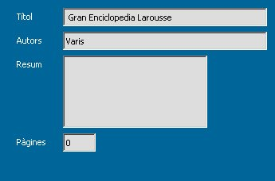

Els formularis són els objectes que s'encarreguen de mostrar el contingut de les taules o els resultats de les consultes de selecció per pantalla amb un format visualment més còmode i agradable per a l'usuari.
Aquest és l'aspecte de la taula Llibres:
Aquest és l'aspecte d'un formulari que farem a continuació:
Com podeu veure el format de presentació de la informació és molt més agradable i a més es pot personalitzar d'una forma molt senzilla.
El formulari únicament emmagatzema el disseny del mateix i la connexió amb el seu origen de dades: taula o consulta. D'aquesta manera la informació que es modifiqui, esborri o afegeixi des del formulari recaurà automàticament sobre el seu origen de dades.
Hi ha diferents formes de crear un formulari segons el nivell de l'usuari. Com que nosaltres estem començant farem servir els següents sistemes:
Començarem veient la creació de formularis a partir de la utilització de l'auxiliar. Seguiu els passos que us indiquem a continuació:
Primer obriu la base de dades Biblioteca i feu clic sobre l'opció Formularis de la columna de la dreta.
Feu un clic sobre “Crea un formulari utilitzant l'auxiliar…”
Ara anirem pas a pas seguint els vuit que tenim indicats a l'esquerra de la finestra de l'auxiliar.
El primer pas és seleccionar la font de la informació: taula o consulta d'on sortirà la informació que es mostrarà al formulari. Per això Selecciona del quadre combinat Taules o consultes la taula Llibres.


Ara hem de seleccionar els camps que contenen la informació que ens interessa.
Hem de fer clic sobre la columna de Fitxers disponibles al camp que volguem…
… i després polsar sobre la fletxa a la dreta per passar el camp a la columna de Camps al Formulari:
Un cop tenim els camps que ens interessen fem clic sobre el botó Següent, per arribar al següent pas. El pas 2 és el de creació d'un subformulari, que consisteix a grans trets en la creació d'un formulari dintre d'un altra formulari amb l'bjectiu d'agrupar informació. De moment aquest pas no el desenvoluparem, polsa Següent i anirem directament al pas 5, ja que el 3 i 4 si no creem Subformularis no estan actius.
El pas 6: Organitza els controls, té com a objectiu decidir la distribució dels controls (camps) del formulari. Per això podeu anar fent clic sobre les diferentes opcions que teniu a l'apartat de Disposició del formulari principal i podreu veure els canvis com s'apliquen al formulari que este creant que el teniu per darrera de la finestra amb la que esteu treballant.
En aquesta imatge podeu veure l'opció Columnar-Etiquetes a l'esquerra.
Polseu Següent per arribar al pas 6: Especifiqueu l'entrada de dades. En aquesta finestra normalment no tocarem res deixant les opcions per defecte. L'habitual és que el formulari mostri tota la informació de la taula o consulta origen i que l'usuari pugui introduir nous registre, esborrar el que vulgui o modificar els que ja estan ficats. Però en cas de voler impedir alguna d'aquestes opcions s'hauria de seleccionar alguna de les caselles que no estan actives actualment.
Polsa Següent. El pas 7 Aplica estils permet seleccionar el color de fons del formulari i les vores dels camps. Practiqueu seleccionant diferents opcions i observeu com es modifica el formulari.
Això és Blau brillant i Vista en 3D.
Per últim, pas 8, posarem el nom al formulari. Per defecte serà el nom de la taula o consulta origen.
Polsa Següent i podrem veure finalment com queda el formulari:

Per poder passar d'una registre a un altre, o introduir un de nou…farem servir la barra de registres que podeu veure a la part inferior del formulari:
A la part inferior de la finestra dels formularis podeu observar la següent barra de navegació.

|
|

|
|